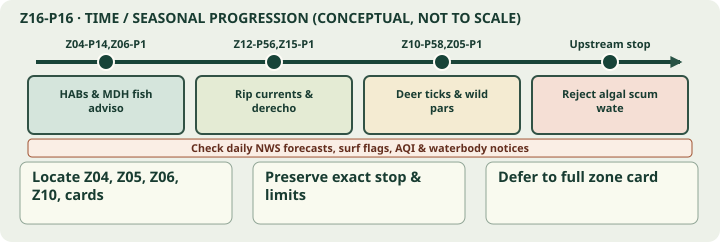

Z16-P16 · Field reference atlas · New manuscript
Summer Storms, HABs, Ticks, Rip Currents and Photodermatitis Index
Cross-index peak summer Upper Midwest hazards across water, shoreline, dermatology, ticks, heat, and severe convective storms.
When it applies · June through August summer recreation, fieldwork, and household emergencies.
Equipment · Full offline reader (Z04, Z05, Z06, Z10, Z12, Z15), primary zone cards, and local emergency and agency references.

Actions
- Watch for cyanobacteria harmful algal blooms (HABs) in warm nutrient-rich lakes (Z04-P14), checking MDH waterbody fish advisories (Z06-P15) and never boiling HAB-scum water.[A02, W04, H04]
- Protect against Great Lakes, ocean rip currents (escape parallel to shore, never fight directly against current, Z12-P56), derecho, tornado storms (Z15-P16), and rapid heat stroke (Z10-P46).[A02, X15, D04, M27]
- Perform daily deer-tick checks using vertical skin-level fine-tipped tweezer removal (Z10-P58), and recognize wild parsnip yellow umbels (photodermatitis burns) and poison ivy (Z05-P130, Z05-P131).[A02, M17, B12, B14]
Failure recognition · Brushing bare legs through roadside wild parsnip, fighting a rip current head-on, or ignoring embedded ticks leads to severe burns, drowning, or tickborne illness.[B14, X15, M17]
Verify · Summer storm, water, tick, rip-current, and dermatitis controls are aligned across zones.[A02, W04, X15, B14]
Stop or change course · Stop water entry during red-flag surf, thunderstorms, or visible algal scum, and seek care for post-tick rash, fever or blistering parsnip burns.[W04, X15, B14]
Evidence and editorial notes
- A02 · National Weather Service · Winter Weather Safety: Stranded Motorists (Current web edition)
- Section: Seasonal Upper Midwest hazard calendar synthesis · Conditions: Integrating Z02, Z03, Z04, Z11, Z12, Z13, and Z15 seasonal shifts
Support: Seasonal hazard indexes align winter cold/ice, spring flood/thaw, summer heat/storms, and autumn hunting/fire windows without overriding local forecasts.
Limitations: Calendar windows are planning aids only; real-time NWS watches/warnings and site checks govern field action. · Conflicting evidence: None noted.
Editorial note: Anchors Z16 seasonal index cards. · Specialist reviewer: Meteorologist and emergency manager
Primary source · checked 2026-11-25 - B12 · NIOSH / CDC · Poisonous Plants: Hemlock, Dermatitis, and Field Hazards (Current web edition)
- Section: Toxic plant dermatitis and hemlock contact/ingestion hazards · Conditions: Field work around poison ivy, poison sumac, wild parsnip, and hemlocks
Support: Urushiol oils in Toxicodendron species cause severe allergic contact dermatitis; burning vines aerosolizes toxic smoke that damages lungs.
Limitations: Never burn unknown vines or brush piles; wash exposed skin promptly with cool water and soap. · Conflicting evidence: None noted.
Editorial note: Covers Z05 contact/inhalation plant hazards. · Specialist reviewer: Occupational health and botanist
Primary source · checked 2026-11-25 - B14 · University of Minnesota Extension · Wild Parsnip Identification and Photodermatitis Hazard (Current web edition)
- Section: Wild parsnip (Pastinaca sativa) phytophotodermatitis · Conditions: Sunny roadsides, prairies, and disturbed meadows in Minnesota
Support: Sap from wild parsnip contains furocoumarins that react with sunlight to cause painful chemical burns and blistering.
Limitations: Avoid bare-skin contact with yellow-umbel roadside stems; wash sap immediately and shield exposed skin from sunlight. · Conflicting evidence: None noted.
Editorial note: Specific Minnesota photodermatitis lookalike warning. · Specialist reviewer: UMN Extension botanist
Primary source · checked 2026-11-25 - D04 · FEMA / Ready.gov · Thunderstorms and Lightning (current web edition)
- Section: Severe Thunderstorms, Straight-Line Winds, Hail, and Lightning · Conditions: Severe Thunderstorm Warnings, derechos, and electrical storms
Support: Move indoors to a substantial building immediately when thunder is heard or severe wind warnings issue; stay away from windows, corded appliances, and plumbing during lightning, and avoid downed limbs and energized downed lines after derechos.
Limitations: Straight-line derecho winds can rival tornado damage across hundreds of miles and cause multi-day regional power blackouts. · Conflicting evidence: None; integrates with E07 and E18.
Editorial note: Grounds severe-storm, hail, and straight-line wind response cards. · Specialist reviewer: Meteorology and utility safety
Primary source · checked 2026-11-24 - H04 · Minnesota Dept. of Health · Fish Consumption Guidance and Waterbody Advisories (Current web edition)
- Section: Waterbody-specific fish consumption advisories (mercury, PFAS, PCBs) · Conditions: Consuming Minnesota caught freshwater fish
Support: MDH issues species-, size-, and waterbody-specific meal-frequency limits for mercury, PCBs, and PFAS, with stricter limits for pregnant/nursing people and children under 15.
Limitations: Visual fish health and water clarity cannot detect mercury, PFAS, or PCBs; check current MDH waterbody lookup before eating caught fish. · Conflicting evidence: None noted.
Editorial note: Mandatory Z06 public-health fish advisory gate. · Specialist reviewer: Public-health toxicologist and MDH reviewer
Primary source · checked 2026-11-25 - M17 · NIH / MedlinePlus · Dehydration (current web edition)
- Section: Dehydration Recognition, Oral Rehydration, and Red Flags · Conditions: Heat exertion, prolonged diarrhea, vomiting, or inadequate water intake
Support: Encourage small frequent sips of safe potable water or labeled oral rehydration solution in alert patients able to swallow; evacuate urgently for confusion, inability to keep fluids down, sunken eyes, or minimal dark urine.
Limitations: Severely dehydrated or altered patients cannot safely rehydrate by mouth alone. · Conflicting evidence: None; avoids unverified homemade salt-sugar ratio guesswork when labeled packets exist.
Editorial note: Links hydration monitoring to medical evacuation triggers. · Specialist reviewer: Wilderness medicine and internal medicine
Primary source · checked 2026-11-24 - M27 · CDC NIOSH · Heat-related Illnesses (current web edition)
- Section: Heat stroke: symptoms and first aid · Conditions: Suspected heat stroke; initiate emergency activation and cooling together
Support: Call EMS and cool immediately. Select cold-water immersion or cooling with water and airflow based on safe access and airway protection.
Limitations: Exertional and classic heat stroke and vulnerable patients warrant specialist cooling protocol review. Avoid oral fluid in impaired alertness. · Conflicting evidence: See A02 claim audit for boundaries.
Editorial note: Added in A02 to separate a consequential source boundary. · Specialist reviewer: Emergency medicine and heat illness
Primary source · checked 2026-11-24 - W04 · CDC · Water Treatment Options When Hiking, Camping, or Traveling (current web edition)
- Section: Water treatment methods > Filter and disinfect · Conditions: Untreated backcountry water; suitable devices and directions
Support: Filter capability varies. Filtering then disinfecting addresses gaps left by typical portable filters. Follow both manufacturers' directions.
Limitations: Effectiveness depends on pore rating, cartridge integrity, and manufacturer-verified test standards. · Conflicting evidence: None; consumer claims outside NSF/EPA standards are excluded.
Editorial note: Used to require multi-barrier pairing rather than relying on one filter alone. · Specialist reviewer: Drinking-water treatment specialist
Primary source · checked 2026-11-24 - X15 · NOAA NOS · Tides and Water Levels Education Tutorial (current web edition)
- Section: Tides and Water Levels > Tidal Range, Cutoffs and Currents · Conditions: Ocean coastlines, sea caves, tidal flats and rocky headlands
Support: Tidal cycles raise water levels rapidly along shallow flats, narrow coves and rocky headlands, trapping hikers against cliffs and generating strong reversing currents in inlets; verify local tide tables before entering coastal routes.
Limitations: Wind-driven storm surge and king tides push water well above normal predicted high-tide marks. · Conflicting evidence: None; pairs with NOAA-COAST.
Editorial note: Grounds tidal-cutoff, headland and mudflat planning cards in Z12. · Specialist reviewer: Coastal navigation and marine safety
Primary source · checked 2026-11-24
Source lineage · New manuscript (Z16 P20 seasonal index) · Classification · New manuscript.